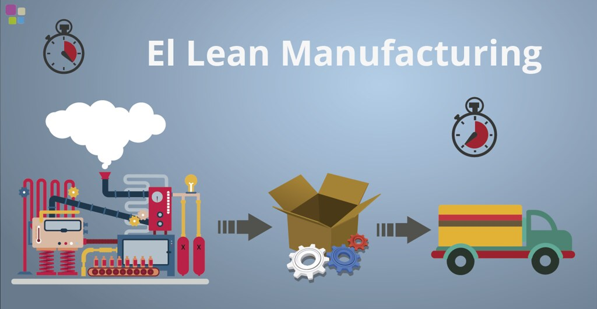
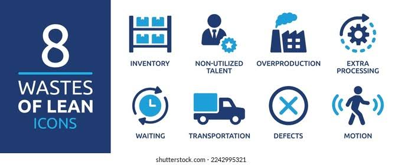
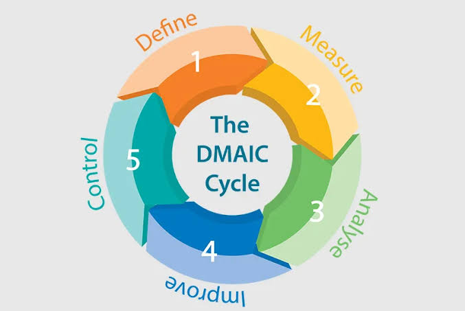

Home Page
Industrial Engineering Strategies for Waste Reduction
Industrial engineering plays a crucial role in enhancing production processes and reducing waste across various industries. To improve performance, specific strategies must be applied through several structured stages.
Key Methodologies
1. Lean Manufacturing

- Focuses on maximizing value-added activities.
- Involves comprehensive analysis to identify non-value-adding steps.
Helps To:
- Increase production efficiency
- Reduce operational costs
- Eliminate unnecessary processes
2. Six Sigma
- Aims to minimize process variation.
- Enhances the quality of products and services.
Uses statistical tools for:
- Data analysis
- Defect source identification
- Process optimization
Benefits of Combining Lean and Six Sigma

- Improved productivity
- Waste reduction
- Enhanced consistency in operations
Organizational and Cultural Integration
3. Integration with Operations and Management
- Encourages innovation and continuous improvement
- Enhances employee engagement
- Simplifies workflows and reduces complexity
4. Resulting Impact
- Better sustainability practices
- Lower operational costs
- A clearer path to long-term efficiency
Case Studies: Practical Applications

Case Study 1: Large Manufacturing Company
Actions Taken:
- Restructured production lines
- Analyzed workflow and eliminated inefficiencies
Outcomes:
- 20% productivity increase within one year
- Improved utilization of human and material resources
Case Study 2: Small Food Production Company
Actions Taken:
- Applied Lean to reduce procurement and inventory waste
- Analyzed supply chain data to avoid over-purchasing
Outcomes:
- Reduced production costs
- Enhanced environmental sustainability
Conclusion
Applying industrial engineering methods such as Lean and Six Sigma delivers measurable improvements in operational performance, waste reduction, and sustainability. These tools are not just theoretical—they create real change in how companies function and grow.